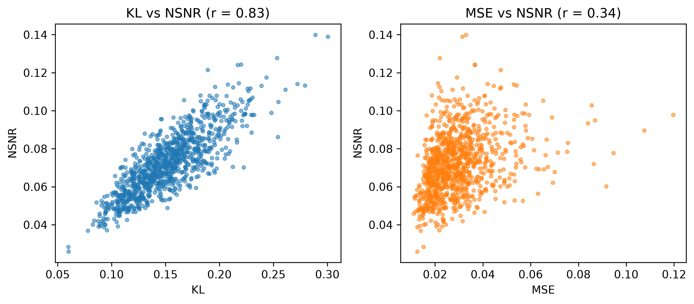

1School of Computer Science and Engineering, The Hebrew University of Jerusalem
Signal Processing, vol. 250, 2027
Theorem 1 — Worst-case NSNR.
For positive definite \(C\) and \(\hat{C}\) with matrix ratio \(Q = C\hat{C}^{-1}\), the worst-case NSNR has the closed form
$$\mathrm{NSNR}_{\min}(C,\hat{C}) = \min_{s} \frac{(s^{H}\hat{C}^{-1}s)^{2}}{(s^{H}\hat{C}^{-1}C\hat{C}^{-1}s)(s^{H}C^{-1}s)} = \frac{q_{\min}\,q_{\max}}{\left(\dfrac{q_{\min}+q_{\max}}{2}\right)^{2}},$$where \(q_{\min}\) and \(q_{\max}\) are the extreme eigenvalues of \(Q\).
Theorem 2 — KL bounds the NSNR distance.
$$d_{\mathrm{NSNR}}(C,\hat{C}) \;\le\; d_{\text{invariant KL}}(C,\hat{C}) \;\le\; d_{\mathrm{KL}}(C,\hat{C}),$$and the left inequality is an equality if and only if all interior eigenvalues of \(Q\) equal the arithmetic mean \((q_{\min}+q_{\max})/2\) of the two extreme eigenvalues.
We address the Normalized Signal to Noise Ratio (NSNR) metric defined in the seminal paper by Reed, Mallett, and Brennan on adaptive detection. NSNR is the ratio between the SNR of a linear detector which uses an estimated noise covariance and the SNR of a clairvoyant detector based on the exact unknown covariance. It is not obvious how to evaluate NSNR since it is a function of the target vector. To close this gap, we consider the NSNR associated with the worst target. Using the Kantorovich Inequality, we provide a closed-form solution for the worst-case NSNR. Then, we prove that the classical Gaussian Kullback Leibler (KL) divergence bounds it. Motivated by these results, we derive a simple variant of a classic norm based estimator by incorporating KL in a leave-one-out cross-validation (LOOCV) framework. Numerical experiments with different true covariances and various estimates suggest that the KL metric is more correlated with the NSNR metric than competing norm-based metrics and simply changing the metric in the LOOCV estimator improves KL and NSNR performance.
Covariance estimates are usually scored with generic distances such as the Frobenius norm, but in target detection what actually matters is the SNR loss of the adaptive matched filter that uses the estimate. That loss – the NSNR of Reed, Mallett and Brennan – depends on the unknown target vector, which makes it hard to use as an accuracy metric. We eliminate this dependence by considering the worst target: using the Kantorovich inequality, the worst-case NSNR admits a closed-form expression that depends only on the extreme eigenvalues of the matrix ratio between the true covariance and its estimate.
We then prove that this worst-case NSNR distance is upper bounded by the classical Gaussian KL divergence (and by its scale-invariant variant), which is smooth and much easier to optimize. This motivates using KL-based criteria whenever detection performance is the end goal.
As an application, we revisit the classical shrinkage covariance estimator, which normally selects its shrinkage parameter by a norm-based criterion (Ledoit–Wolf). We instead select it by minimizing a leave-one-out cross-validation approximation of the KL divergence, computed efficiently with Sherman–Morrison rank-one updates. The change is one line conceptually, yet it consistently improves both KL and NSNR performance.
Across Monte Carlo experiments, KL tracks the detection-oriented NSNR far better than norm-based metrics: the Pearson correlation between KL and NSNR is 0.8, versus 0.3 for MSE. Against the empirical probability of detection of the AMF detector, the correlations are −0.82 (NSNR), −0.75 (KL) and only −0.11 (NMSE).

On synthetic Toeplitz and Kronecker covariances as well as real covariances from the Pavia University hyperspectral dataset, the KL-based LOOCV shrinkage estimator improves the NSNR, KL and detection AUC of its norm-based counterpart.
@article{busbib2027nsnr,
title = {Normalized signal-to-noise ratio for covariance estimation in target detection},
author = {Busbib, Daniel and Diskin, Tzvi and Wiesel, Ami},
journal = {Signal Processing},
volume = {250},
pages = {110820},
year = {2027},
doi = {10.1016/j.sigpro.2026.110820}
}